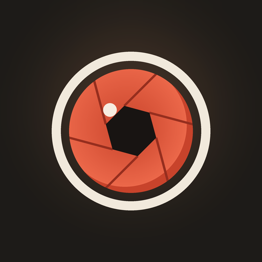

点「指导」，或者点我
点一张放大看 · 长按可以多选：分析、删除、编成摄影集
都可以不填。写上地点和名字，配文会更像你自己写的；没写的，伙伴不会乱编。
还没有照片 · 去拍几张吧
还没有摄影集在「相册」里长按选几张照片，点「编成摄影集」
都可以不填。拍摄水平和常拍题材会告诉 AI，让指导的深浅和用到的技能更合你。
提示文字会发送给千问合成语音。未配置或断网时使用系统语音。
系统语音会按伙伴匹配男女声，实际可用声音取决于手机安装的语音引擎。
密钥只保存在这台手机上。填好后点「测试并保存」，连得上才会存下来。
摄影技能是一段段摄影师的经验。实时指导、照片分析、专业参数和摄影集配文时，伙伴会按场景自动挑几条用上，用到时会显示 📖 小标签。
自带的可以开关、修改；也可以自己写，或者导入别人分享的技能文件（.md）。